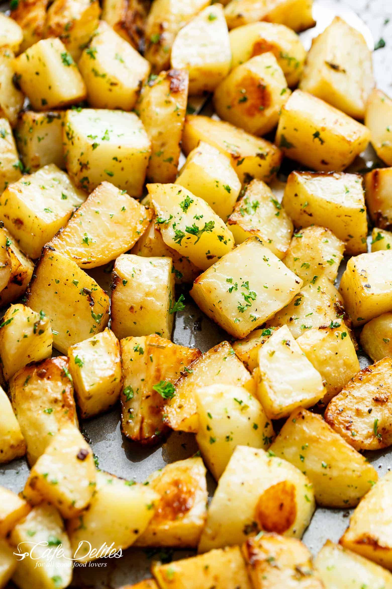

Welcome to OnlyPotatoes!
Crispy Garlic Roasted Potatoes

Buttery, garlicky, fluffy inside with crisp, golden edges… crispy garlic roasted potatoes are a super simple side dish perfect with anything!!
No need for bowls or pans when you can prepare AND cook your potatoes on ONE PAN!
Buttery Herb Mashed Potatoes

Mashed potatoes are the ultimate comfort food, and these roasted garlic mashed potatoes take treating yourself to a whole other level. Thanks to the flavor powerhouse that is homemade roasted garlic, our creamy mashed potatoes are the quintessential sidekick to the best meals your table will ever see.
Crispy Homemade Waffle Fries

Each fry is coated in a layer of golden crisp that gives way to a soft, welcoming interior. They hit savory and umami with a hint of sweetness and they taste like potatoes, oil, and just the right amount of salt.